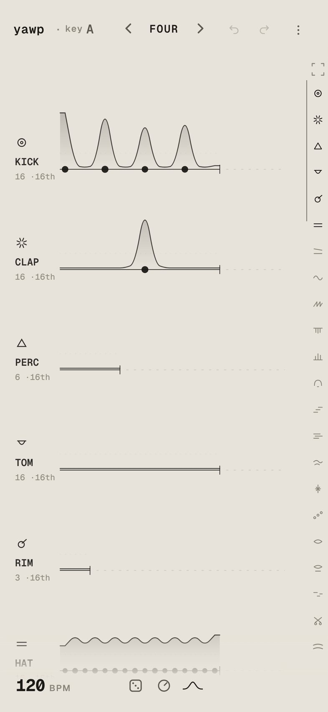
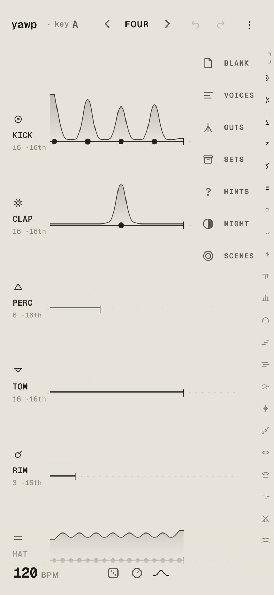
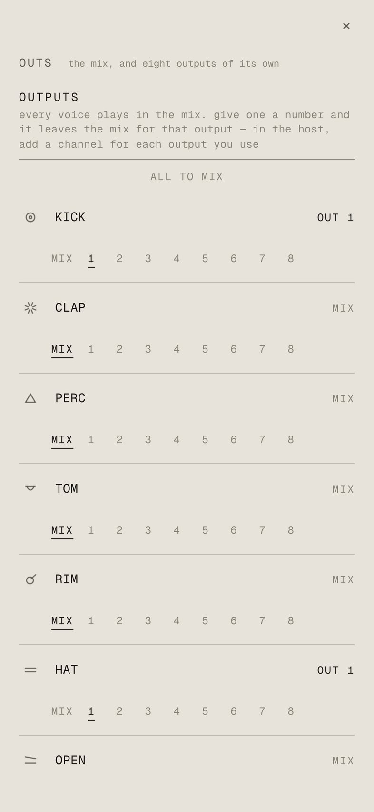
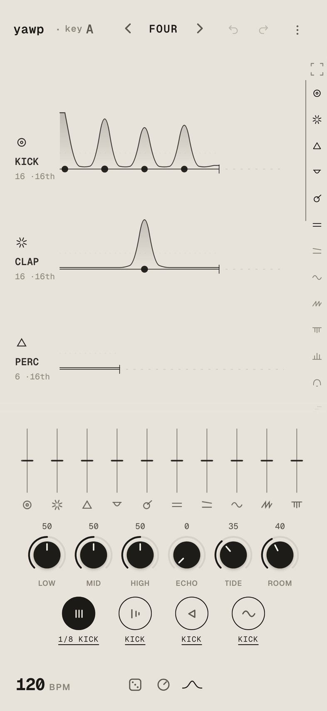

yawp in other apps
yawp runs as an AUv3 plugin in AUM, GarageBand, Logic and other hosts. Each voice can go to an output of its own, so you can process the kick, the hats or the chords on their own channels.
The plugin comes with complete. Buy complete in the yawp app, then open the plugin in your host.
ほかのアプリで使う
yawp は AUv3 プラグインとして、AUM、GarageBand、Logic などのホストアプリで使えます。楽器ごとに別の出力へ振り分けられるので、キックやハット、コードをそれぞれのチャンネルで加工できます。
プラグインは complete で使えます。yawp アプリで complete を購入してから、ホストアプリでプラグインを開いてください。
- 01Load yawp in a hostホストに読み込む
- 02Send voices to their own outputs楽器を出力に振り分ける
- 03In AUMAUM での設定
- 04Pads on one voice1つの楽器だけにパッドをかける
- 05Good to know知っておくとよいこと
- →The guide: every gesture使い方：すべての操作

Load yawp in a host
yawp shows up in your host’s list of Audio Units under Stems, in two forms:
- Stems: yawpAn instrument. It plays yawp’s own sound, and sends only the MIDI lanes out as MIDI.
- Stems: yawp MIDIA MIDI processor. It makes no sound and sends every loop out as MIDI, for your other synths.
Inside the host, yawp follows the host’s tempo and transport, so the host’s play button starts it. You draw on the same sheet as in the app. The host keeps your song with its session.
ホストに読み込む
yawp は、ホストアプリの Audio Unit の一覧で Stems の下に、2つの形で表示されます。
- Stems: yawp楽器です。yawp の音を鳴らします。外に MIDI として送るのは MIDI レーンだけです。
- Stems: yawp MIDIMIDI プロセッサーです。音は鳴らさず、すべてのループを MIDI として送ります。ほかのシンセを鳴らすときに使います。
ホストの中では、テンポと再生・停止はホストに合わせます。ホストの再生ボタンで yawp も動き出します。描く画面はアプリと同じです。曲はホストのセッションと一緒に保存されます。


Send voices to their own outputs
Stems: yawp has nine outputs: the mix (yawp) and out 1 to out 8. Every voice plays in the mix until you send it somewhere else.
- Open the drawer with ⋮ at the top right and tap outs.
- Each voice has a row of choices:
MIX 1 2 3 4 5 6 7 8. Tap a number to send the voice to that output. It leaves the mix and plays only there. - Voices given the same number share that output. For example, give the kick, clap and hats
1to have the drums together on one channel. ALL TO MIXat the top puts every voice back in the mix.
Each output is named after the voices on it, for example 1 kick clap hat, so you can tell them apart in the host.
楽器を出力に振り分ける
Stems: yawp には9つの出力があります。ミックス（yawp）と、out 1 から out 8 です。振り分けるまでは、すべての楽器がミックスで鳴ります。
- 右上の ⋮ でメニューを開き、outs をタップします。
- 楽器ごとに
MIX 1 2 3 4 5 6 7 8が並んでいます。番号をタップすると、その楽器はミックスから外れて、その番号の出力だけで鳴ります。 - 同じ番号を選んだ楽器は、同じ出力にまとめて出ます。たとえばキック、クラップ、ハットを
1にすると、ドラムを1つのチャンネルにまとめられます。 - 上の
ALL TO MIXで、すべての楽器をミックスに戻します。
出力には、振り分けた楽器の名前が付きます（例：1 kick clap hat）。ホスト側で見分けるときの目印になります。
In AUM
- Add a channel and load Stems: yawp in its input slot. This channel plays the mix.
- In yawp, send the voices you want apart to their outputs (step 02 above).
- Add a new channel for each output you use. In its input slot, choose yawp’s output from the plugin bus list, for example
1 kick clap hat. - Put effects on each channel as you like. The mix channel keeps every voice you did not send away, plus the echo and room.
If an output still shows as out 1 after you change the voices on it, load yawp again in AUM so it reads the new names.
AUM での設定
- チャンネルを追加し、入力スロットに Stems: yawp を読み込みます。このチャンネルがミックスです。
- yawp の outs で、分けたい楽器を出力に振り分けます（上の 02）。
- 使う出力の数だけ、新しいチャンネルを追加します。入力スロットの plugin bus の一覧から、yawp の出力を選びます（例：
1 kick clap hat）。 - チャンネルごとに好きなエフェクトをかけられます。ミックスのチャンネルには、振り分けなかった楽器と、エコーと残響が残ります。
振り分けを変えても AUM の一覧で out 1 のままになっているときは、AUM で yawp を読み込み直すと新しい名前が表示されます。

Pads on one voice
The pads freeze, stop, rev and half work inside the plugin as in the app.
- press a padIt plays on the whole song: the mix and every output.
- hold a fader, then a padHold a voice’s fader in the mixer with one hand and press a pad with the other. The pad shows the voice’s name (here
1/8 kick) and plays on that voice alone, wherever it is sent.
You can hold two faders to play a pad on two voices.
1つの楽器だけにパッドをかける
freeze・stop・rev・half のパッドは、プラグインの中でもアプリと同じように使えます。
- パッドを押す曲全体にかかります。ミックスと、すべての出力にかかります。
- フェーダーを押さえてパッド片方の手でミキサーの楽器のフェーダーを押さえたまま、もう片方の手でパッドを押します。パッドに楽器の名前が出て（この画面では
1/8 kick）、どの出力に振り分けていても、その楽器だけにかかります。
フェーダーを2本押さえると、2つの楽器にかけられます。
Good to know
- what an output carriesThe voice as the mixer shapes it: its fader, drive, tone and EQ. The LOW, MID and HIGH knobs and the song’s arc reach it too.
- echo and roomA voice on its own output still sends to the echo and the room, and those play in the mix. On its own channel the voice is dry.
- the masterThe mix keeps yawp’s glue and limiter. The outputs leave them out, so you can use your host’s.
- where the choice is keptThe outs choice is kept on your device, not with each host session.
- chopThe chop lanes are not in the plugin; their takes stay in the app.
知っておくとよいこと
- 出力に含まれるものミキサーで調整した楽器の音です（フェーダー、drive、tone、EQ）。LOW・MID・HIGH のつまみと、曲の ARC もかかります。
- エコーと残響出力に振り分けた楽器も、エコーと残響には送られていて、それはミックス側で鳴ります。振り分けた先のチャンネルでは、楽器の音は残響なしで鳴ります。
- マスターミックスには yawp のコンプレッサーとリミッターがかかります。振り分けた出力にはかからないので、ホスト側のものを使えます。
- 振り分けの保存outs の振り分けは、ホストのセッションごとではなく、端末に保存されます。
- chopchop のレーンはプラグインでは使えません。録った音はアプリの中にあります。